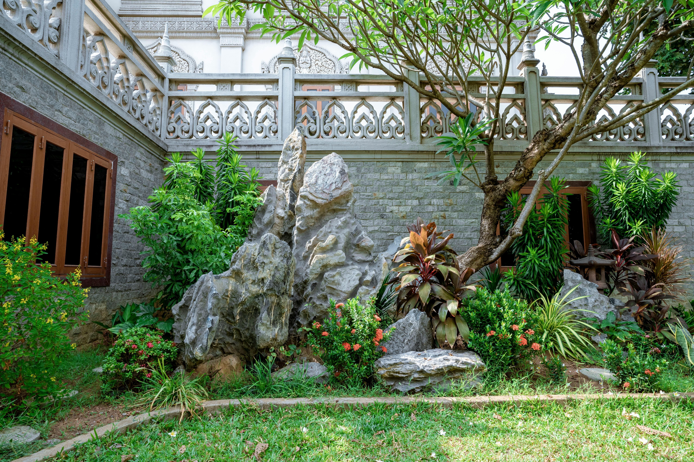
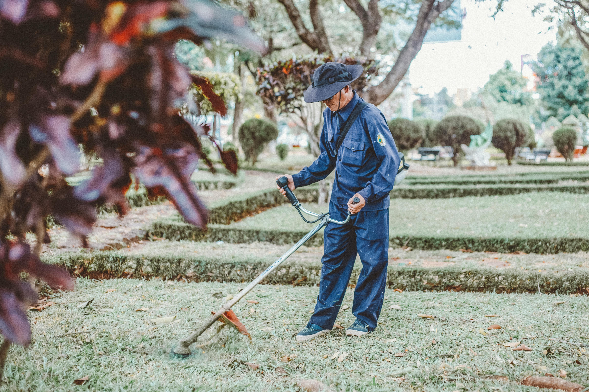

Enhancing Outdoor Environments
JA2K provides landscaping services that improve the appearance, comfort, and functionality of outdoor residential and commercial spaces.
Garden Design
We create modern garden layouts that combine greenery, aesthetics, and practical outdoor arrangements.
- - Modern garden layouts
- - Decorative outdoor designs
- -Functional green spaces

Outdoor Renovation
Our outdoor renovation services improve exterior areas with upgraded finishes and practical landscaping solutions.
- - Exterior improvement works
- - Outdoor decorative finishes
- - Space optimization

Landscape Maintenance
We provide maintenance services that help keep outdoor spaces clean, organized, and visually appealing throughout the year.
- -Outdoor cleaning and upkeep
- - Garden maintenance
- - Long-term landscape care

Looking to Upgrade Your Outdoor Space?
Contact JA2K for professional landscaping and exterior improvement services.
CONTACT US